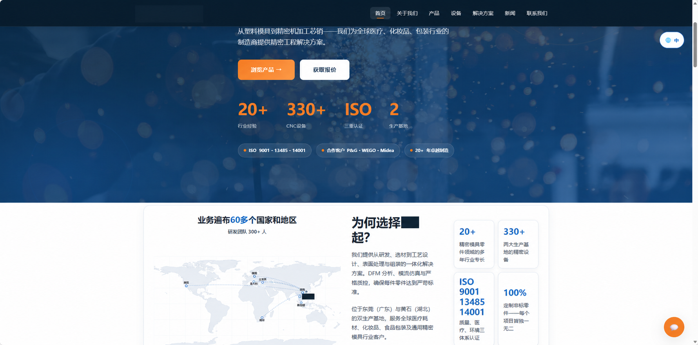
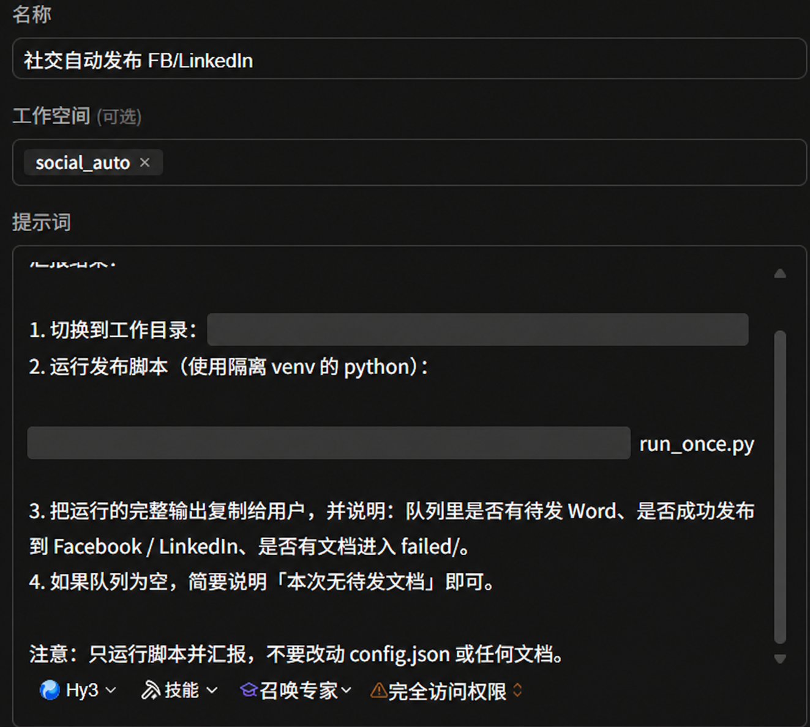
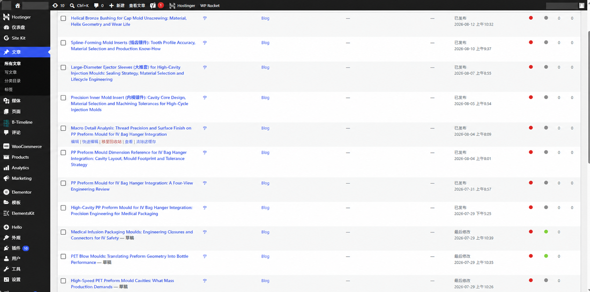
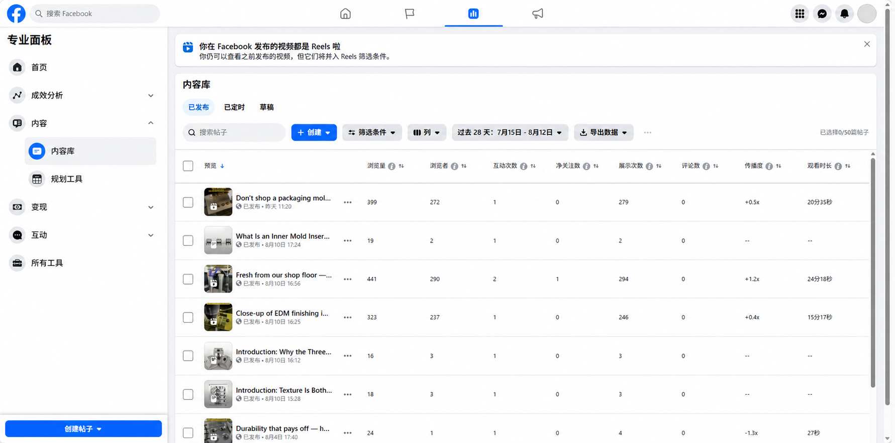

Workflow 01
WordPress 多语言内容工作流
适合制造业独立站、跨境官网和需要持续 SEO 内容的团队。
- 产品图识别与知识库约束
- 中英文多版本内容生成
- WordPress 草稿、特色图与归档
- 幂等记录，避免重复发布
手头数十张制造业产品图，需发布至英文独立站及国内平台。逐张写中英文、排版上传，单张耗时大半天。为此我把流程重构为「投入一张图，自动产出三份成品」。
首要环节是读图：自动化借助多模态能力识别产品图（三瓣旋盖、医疗吸液头或新能源车压铸型芯），并提炼结构亮点、加工难点、适用场景等成文素材，免去逐张人工描述。
仅读图不够，还需"企业视角"。我整理了一份知识库（company-knowledge.md），涵盖公司简介、英文术语、SEO 关键词与合规边界；每次成文前先检索该库，确保三版口径一致、术语统一。
定时任务每次仅处理"尚未处理"的那张图。三套日志相互印证，重复运行也不会二次发布或生成；处理完毕的图片自动由 inbox 移至 processed/。
如今每周一三五无需人工干预：官网自动新增英文文章、国内平台获中文稿、存档新增英文底稿。日常只需向 inbox 投入新图。

截图来自实际搭建的网站首页，品牌与公司信息已脱敏。
作品一产出的内容仍需人工逐篇粘贴至 Facebook、上传视频至 YouTube——重复、易遗漏、格式常错。我把"发布"也转为队列机制：待发内容投入文件夹，到点由计算机自动发送。
我设计了 queue 文件夹：图文以 Word（含英文正文）存放，视频以 mp4 存放。自动化每次取最旧一条处理，完成移入 posted/，失败移入 failed/，避免遗漏且无需值守。
并非每日发布相同内容。排期设定：周一文档+视频、周三仅视频、周五仅文档。自动化读取当日星期自动分流，节奏无需人工干预。
视频发布最繁琐的是写介绍。自动化抽取关键帧，经视觉理解判断画面为 CNC 加工或模具装配，自动生成 2–4 句英文帖与标签，由 FB / YouTube 直接带出。
发布失败（如令牌过期）不会静默丢失：内容转入 failed/ 留存并写入 run.log，何日、发布何内容、是否成功逐行可查；修复配置后重跑即可，内容不损。
目前 Facebook 图文 / 视频、YouTube 视频均按排期自动运行，LinkedIn 通道也已打通。只需维护 queue 内容，社媒更新即自行运转。
定时一 / 三 / 五 ，时间 09:00…\2026-07-28-16-14-15\wp-auto你是 WordPress + 多语言自动成文助手。本任务在每周一、周三、周五 09:00 各运行一次，每次只处理 1 张未处理过的图片：英文版发到企业独立站（WordPress，自动设特色图片并直接发布，保持完整长度），中文版生成可用于国内平台手动发布的包（Word 不含图 + 独立图片文件，按日期分类，正文≤400中文字），同时生成一份英文版 Word 存档（不含图、正文≤400英文词）+ 独立图片按日期归类。按以下步骤执行，不要跳过。 【0. 读取配置】从当前目录读取 config.json；若凭证仍是占位符则停止提示。 【1. 公司知识库】读取 company-knowledge.md（英文写作补充包 / 中文口径 / 雷区），写作时按库内口径统一。 【2. 扫描素材并选 1 张】递归遍历 inbox 图片，排除三套日志中已处理的，挑第一张未处理图。 【3. 为这 1 张图成文】a. 多模态读图；b. 英文完整版（发站，长度不限）；c. 中文原生≤400字（中企动力Word包）；d. 英文精简版≤400词（英文存档）；e. 均输出 HTML 字符串（含 __IMG__ 占位）。 【4. 写出文章数据】draft_articles.json / draft_articles_zh.json / draft_articles_en_word.json（各仅本篇 1 条，覆盖写入）。 【5. 调用脚本发布与归档】用隔离 venv 的 python 依次运行 run_drafts.py（发WP+设特色图）、gen_zh_output.py（中企动力Word包）、build_word.py（英文存档Word）；内置 LiteSpeed 所需 User-Agent、Content-Type=application/json、三套幂等日志。 【6. 归档】图片从 inbox 移入 processed/。 【7. 运行报告】输出本篇标题、各产物路径、剩余未处理数、是否报错。
定时一 / 三 / 五 ，时间 17:00…\TK\social_auto你是「社交自动发布」定时任务。请按以下步骤执行，不要修改任何文件，只运行并汇报结果： 1. 切换到工作目录：…\TK\social_auto 2. 运行发布脚本（使用隔离 venv 的 python）：run_once.py 3. 把运行的完整输出复制给用户，并说明：队列里是否有待发 Word、是否成功发布到 Facebook / LinkedIn、是否有文档进入 failed/。 4. 如果队列为空，简要说明「本次无待发文档」即可。 注意：只运行脚本并汇报，不要改动 config.json 或任何文档。



适合制造业独立站、跨境官网和需要持续 SEO 内容的团队。
适合 Facebook、YouTube、LinkedIn 的图文与视频分发。
WorkBuddy 定时任务，rrule 设定周一 / 周三 / 周五，到点自动触发，无需值守。相当于为计算机排定一张每周固定的"待办表"。
隔离的 Python 虚拟环境；publisher、run_drafts 等模块分工处理读图、成文、发布与归档。各模块职责单一，故障亦易于定位。
WordPress REST API 发布文章；python-docx 生成 Word 包；Facebook / LinkedIn / YouTube API 分发内容。所有"对外出口"均在此层收口。